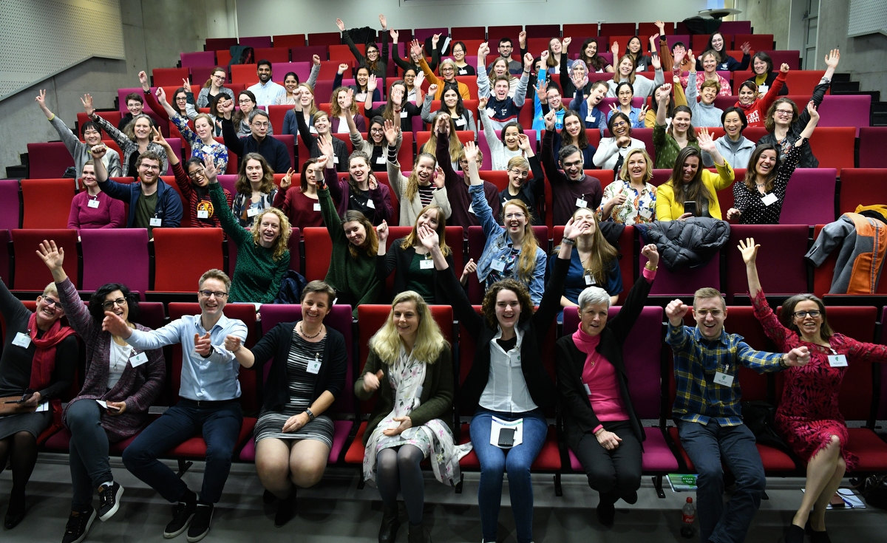

Alice & Eve 2021!
Alice & Eve 2021 has been announced, go to https://aliceandeve.cs.ru.nl/ for more information!
Call for Participation & Posters
Alice & Eve 2020 is a free, one day meeting to celebrate women in computing in the Netherlands. The event is open to everybody, from Bachelor and Master students up to full professors.
This is the first time this event is held in the Netherlands. It is inspired by the BCS Lovelace Colloquium, which has been held for over 12 years. We hope to build up a similar tradition with Alice & Eve.
Alice & Eve will take place on January 24, 2020 in Waaier 3 at the University of Twente.
The day will feature talks, a poster contest, an exhibition on women in computing, a free lunch and coffee breaks.

Click the following links to download the photos (121 MB) and exhibition booklet (24 MB).
Key information
The date: Friday, January 24, 2020
The venue: Waaier 3 at University of Twente
Poster submission deadline: (extended) Saturday, January 11, 2020 (23:59)
The colloquium is open to all (also without a poster), and free – you have to sign up online first though. You can register here.
The following speakers have already confirmed their participation in the event:
- Emily Jacometti, Flavour
- Stacey Jeffery, CWI
- Fenia Aivaloglou, University of Leiden & Open University
- Alexander Serebrenik, Eindhoven University of Technology
- Anna Sperotto, University of Twente
- Joyce Westerink, Eindhoven University of Technology
Poster contest
Poster prizes have been awarded in the following categories:
- Bachelor students, including students from the universities of applied sciences (HBO)
- 1st prize: Tania-Andreea Grama, Dawid Zalewski and Javier Ferreira Gonzalez - Machine learning based sensor fusion for localization applications
- 2nd prize: Tianai Dong - Disambiguate Explicit Discourse Connectives in Text
- Master students
- 1st prize: Shreyasi Pathak, Christin Seifert and Michel van Putten - Deepsleep: Deep Learning for Automatic Sleep Scoring
- 2nd prize: Rumjana Romanova and Veronika Cheplygina - Instance Label Stability in Multiple Instance Learning
- PhD students & Post docs
- 1st prize: Meike Nauta, Doina Bucur and Christin Seifert - Causal Discovery with Attention-Based Convolutional Neural Networks
- 2nd prize: Daphne Miedema - What are common mistakes that novices make when learning query languages?
- People’s choice
- Maaike Heijdenrijk - Keeping the world quantum safe with elliptic curves
The winners of the best poster prizes also get the opportunity to present their work at ICT.OPEN!
Organizing committee
- Marieke Huisman, University of Twente
- Sophie Lathouwers, University of Twente
- Alma Schaafstal, University of Twente
- Marielle Stoelinga, University of Twente
If you have any other questions, feel free to email us on AliceAndEve2020@lists.utwente.nl.